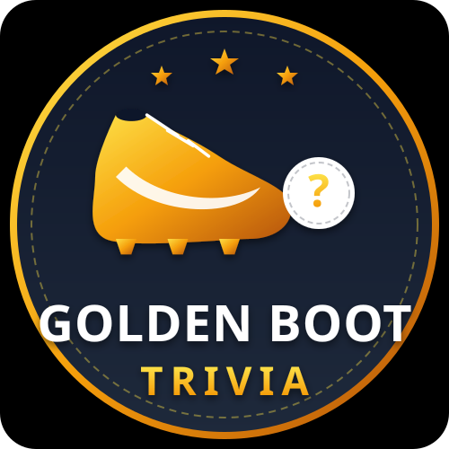

Kickoff in progress
Ajora
GOLDEN BOOT
TRIVIA
← Games
Choose your match
Pick A Category
🏆
World Cup Mixed
72 questions on teams, legends & tournament history.
15 Questions · Mixed
🌍
National Teams
Pick a country and go deep on their football history.
10 Countries
⚽
Club Football
Real Madrid, Barcelona, United, and more.
8 Clubs
🕵️
Guess The Player
Clues drop one by one — buzz in early for max points.
10 Rounds
← Back
National Teams
Pick A Team
Score
0
Streak
0
Question
1
/
15
Best
0
10
TEAM STAT
Loading question…
Next Question →
Points
0
Round
1
/
10
Correct
0
🕵️ Scouting Report
Guess now for up to 100 pts
Next Player →
Full time
Golden Boot
Trivia
0/15
Squad Player
Correct answers this round
Best Streak
0
Accuracy
0%
All-Time Best
0/15
⬇ Download Card
↗ Share
Play Again
Change Category
← Back to Games